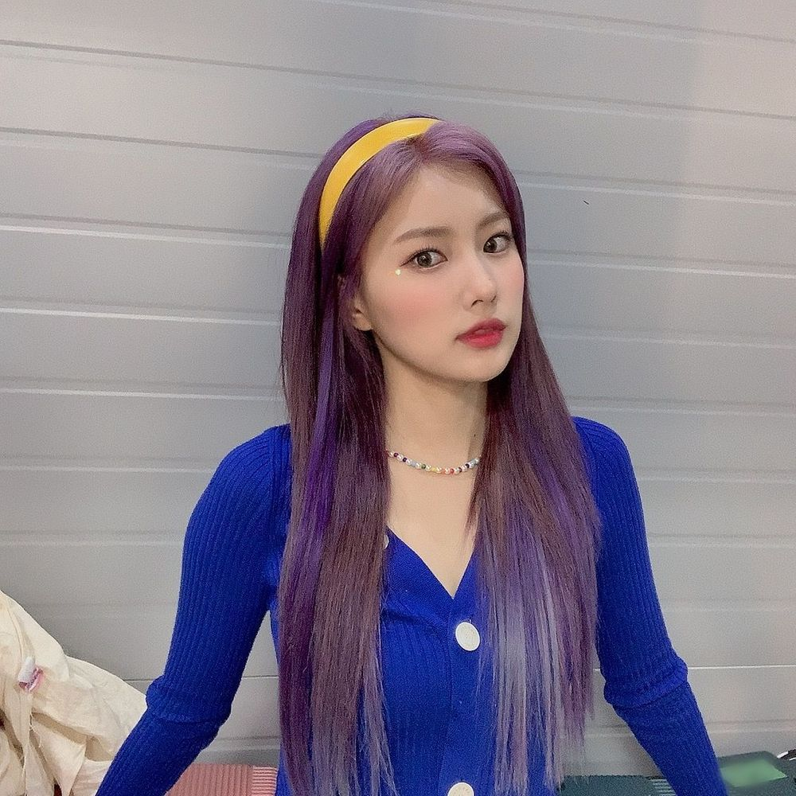

🍯🍪🍿🎊🎂🍱🎉🍚🎁🎀🐽🐶🥑😍🌸❤️👍🏻🍩🍭🍬🍡🥧🍢🍣🥠🥰🧁🍘🍝🥰🥰😍🥰😘😘😗😙😆😁 어제 컴백쇼 봤나용? 직캠도 떠서 조마조마 하면서 봤는데 댓글에 좋은 말이 많아서 안심되기도하고 다행이다 싶기도하고 결론은 기분 좋았다 이말하고싶은거ㅋㅋㅋㅋㅋㅋㅋㅋㅋㅋㅋㅋㅋㅋ 표현이나 말을 원래 잘 못해서 ㅜㅜ라비앙때부터 지금까지 내가 답답할수도있는데 항상 응원해주고 지금까지도 응원해줘서 고마워요! 항상 보고있었는데 말을 못했어요. 잘 할수 있도록 기다려주고 매일 좋은 말 해주려고 해줘서 감사합니다 아직도 많이 부족하지만 더 나은사람이 될 수 있도록 도와줘서 고마워요 😃 이런 글 쓰는거 처음이라 왜이렇게 부끄럽냐 요새 날씨도 점점더워지는데 항상 몸과 마음 건강하시길바래요 🌸